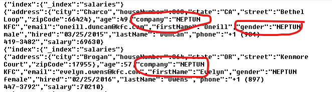
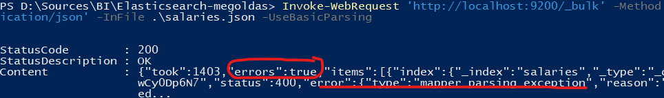

Exercise 3: Initializing Elasticsearch¶
Now that both Elasticsearch and Kibana are operational, let us create the necessary indices for us to work with in the following exercises.
Index a document via PowerShell¶
First, we are going to use Elasticsearch's REST API through PowerShell.
-
To index a document in Elasticsearch issue the following command.
(Invoke-WebRequest 'http://localhost:9200/test/_doc/1?pretty' -Method Put -ContentType 'application/json' -Body '{ "name": "John Doe" }' -UseBasicParsing).ContentThis way we inserted a document of type
_docinto the index calledtestwith id1. The response JSON should state"result": "created". -
Query the document with the following command.
(Invoke-WebRequest 'http://localhost:9200/test/_doc/1?pretty' -Method Get -UseBasicParsing).ContentThe result JSON tells us the name of the index, the id of the document, as well as the full document we inserted in the
_sourcefield.{ "_index": "test", "_type": "_doc", "_id": "1", "_version": 1, "_seq_no": 0, "_primary_term": 1, "found": true, "_source": { "name": "John Doe" } }
Create an index and index a document using Kibana¶
In this part of the exercise we are going to create an index for documents containing information about people working in the fast food industry. Here is a sample document.
Sample document¶
{
"gender": "female",
"firstName": "Evelyn",
"lastName": "Petersen",
"age": 17,
"phone": "+1 (900) 503-3892",
"address": {
"zipCode": 63775,
"state": "NY",
"city": "Lynn",
"street": "Clarkson Avenue",
"houseNumber": 503
},
"salary": 87217,
"company": "Subway",
"email": "evelyn.petersen@subway.com",
"hired": "09/29/2009"
}
We are going to use Kibana's Dev Tools for this part of the exercise. Although it uses the same REST API that we used through PowerShell, it provides a more convenient GUI for us to use. In this Dev tool we can run queries. A query contains of (1) a http verb and an URL matching Elasticsearch' REST API, and then (2) a body as JSON.

-
In Kibana's Dev Tools enter
PUT salariesin the first line and then enter the following JSON starting on a new line. Then press the Play button in the top right corner of the editor.{ "settings": { "number_of_shards": 1, "number_of_replicas": 0 }, "mappings": { "properties": { "gender": { "type": "keyword" }, "address.state": { "type": "keyword" }, "company": { "type": "keyword" }, "hired": { "type": "date", "format": "MM/dd/yyyy" } } } }
The settings we use here are the following.
-
settings: We set the number of shards and replicas here. While settings the number of shards is not that important here, we must set the number of replicas to zero in order to have an index with green health value. This is because Elasticsearch refuses to put a shard and its replica on the same node, and we only have a single node. -
mapping: Mapping is the "schema" of the data. It is not necessary to set this, but when the data is ambiguous, Elasticsearch will make a choice how to interpret data, unless we specify the mapping.-
gender,address.state,company: These are values we know are only going to have a few select values (e.g. "male" and "female" for gender), therefore we do not want to allow free text search on them. We can help the system by specifying this. -
hired: Although this is a date field, the date representation of our data is not standard — Elasticsearch wouldn't recognize it by itself. Therefore we have to explicitly specify the date format.
-
-
-
We can check the indices with the
GET _cat/indices?vquery.
Note how the health of the
testindex is yellow and the health of thesalariesindex is green. That is because the default value for the number of replicas is 1. -
Insert the sample document into the created index. You can find the sample document here.
POST salaries/_doc { ... // the sample document comes here }Executing the query will yield a similar result (in the right side of the window). This is the response of the POST query with the
idof the document inserted.
We can use the
_idvalue in the response to query the document.GET salaries/_doc/eZSmaGkBig5GeeBFsFG6
Modify the input data¶
Before we import the rest of the sample data, let us make some changes by adding your Neptun code as a prefix to some of the values:
- Each
gendervalue shall be prefixed, e.g."gender":"NEPTUN female" -
Each
companyvalue shall be prefixed, e.g."company":"NEPTUN McDonalds" -
Find the
salaries.jsonfile in the root of the repository. Open a PowerShell console here. -
Edit the following command by adding your Neptun code, then execute it in PowerShell (do NOT change the quotation marks, only edit the 6 characters of the Neptun code!):
(Get-Content .\salaries.json) -replace '"gender":"', '"gender":"NEPTUN ' -replace '"company":"', '"company":"NEPTUN ' | Set-Content .\salaries.json -
Verify the results, it should look similar (with your own Neptun code):

The file must be a valid JSON! Please double check the quotations marks around the values. If the result is not correct, you can revert the change made to this file using git (
git checkout HEAD -- salaries.json), and then retry.The modified file shall be uploaded as part of the submission.
IMPORTANT
Adding your Neptun code is a mandatory step. It will be displayed on visualizations created in the following exercises.
Index many documents using the bulk API¶
And now let us index these documents.
-
We can add multiple documents to the index using the bulk API. Issue the following command from the PowerShell window in the folder of the starter solution.
Invoke-WebRequest 'http://localhost:9200/_bulk' -Method Post -ContentType 'application/json' -InFile .\salaries.json -UseBasicParsing -
Verify the response whether there are any errors. You will see a similar message if everything is OK (note the errors in the response):

If you see a similar error, it means the changes in the source file resulted in an invalid json file.

If this happens, you need to start over:
-
Delete the
salariesindex by executing aDELETE salariesrequest in Kibana. -
Go back to the index creation step, then repeat the index creation and indexing of the single document.
-
Reset the changes made to the
salaries.jsonfile, and retry the replacement with special care regarding the quotation marks. -
Now retry the bulk index request.
-
-
Execute a search using query
GET salaries/_search(using Kibana). This will return a few documents, and also let us know how many documents there are (total number matching the query will be the total number of documents, due to the lack of filtering in this search). There should be 1101 documents.
If you see fewer documents, you need to use the Refresh API to make sure Elasticsearch is finished with all indexing operations. To trigger this, execute a
POST salaries/_refreshrequest.